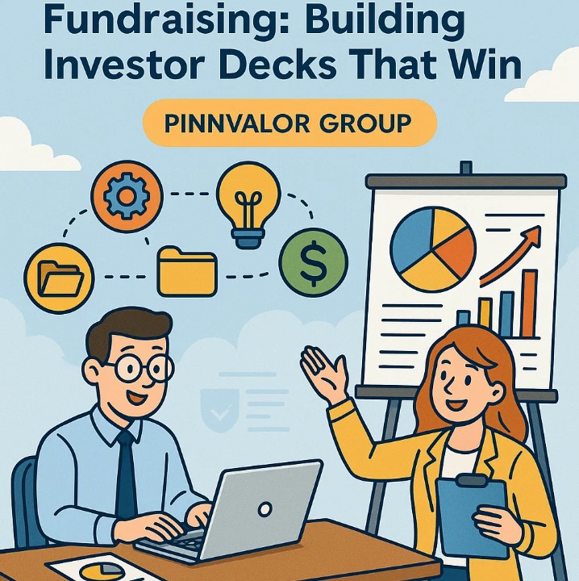

How MIS Transforms Fundraising: Building Investor Decks That Win
Fundraising is a critical milestone for startups and growing companies, where the ability to tell a compelling story backed by solid data can make all the difference. Today, investors demand transparency, clarity, and data-driven insights that demonstrate business viability and growth potential. This is where a well-designed Management Information System (MIS) becomes indispensable.
How do winning startups leverage MIS to build investor decks that seal the deal?
Fundraising success is no longer just about ideas — it’s about presenting clear, data-driven stories that inspire investor trust.
An MIS streamlines the collection, analysis, and presentation of key business metrics, enabling founders to create investor decks that are not only visually engaging but also packed with credible data. This blog explores how an MIS transforms the fundraising process and guides you in building investor decks that win investor confidence.
What is MIS and Why Does it Matter for Fundraising?
A Management Information System (MIS) is a structured framework that gathers, processes, and presents business data to support decision-making. For fundraising, MIS acts as the foundation that organizes financial, operational, and market metrics crucial to investors.
- Data Accuracy & Consistency: An MIS ensures that data used in investor presentations is accurate, updated, and consistent, reducing risks of discrepancies or misinformation.
- Time Efficiency: Automating data collection and reporting frees up founders’ time, allowing them to focus on strategy and investor relationships.
- Insightful Analysis: MIS tools provide analytics capabilities that turn raw data into actionable insights and trends, essential for investor confidence.
Key Metrics Investors Look for in Fundraising
Investors typically seek a clear snapshot of a company’s health and growth prospects. Your MIS should be designed to capture and report on these key metrics:
- Financial Metrics: Revenue growth, gross margin, burn rate, runway, EBITDA, cash flow, and unit economics.
- Customer Metrics: Customer acquisition cost (CAC), lifetime value (LTV), churn rate, and retention rates.
- Operational Metrics: Monthly active users (MAU), product usage stats, sales pipeline, and conversion rates.
- Market Metrics: Market size, competitive positioning, and growth potential.
Having these metrics clearly tracked and ready for presentation builds credibility and shows investors that the business is well-managed and data-driven.
How MIS Shapes Winning Investor Decks
An investor deck is more than a slide show; it’s a storytelling tool that must balance narrative and numbers. Here’s how MIS helps shape decks that resonate:
- Real-Time Data Integration: MIS platforms can generate real-time reports and dashboards, allowing you to include the latest data in your presentations.
- Customizable Reporting: You can tailor data views to highlight what matters most for different investor audiences (financials for VCs, market metrics for angels, etc.).
- Visual Data Representation: MIS tools help convert complex data into easy-to-understand charts, graphs, and infographics, making your deck visually compelling.
- Scenario Planning: Use MIS to model different business scenarios and show potential outcomes, demonstrating preparedness and strategic thinking.
Best Practices for Using MIS in Fundraising
- Start Early: Build your MIS well before fundraising rounds to avoid last-minute data scrambling.
- Keep Data Clean: Regularly audit your data to maintain accuracy and reliability.
- Align Metrics with Business Goals: Ensure your MIS tracks metrics that align with your growth story and investor expectations.
- Leverage Automation: Automate data collection and reporting as much as possible to reduce errors and save time.
- Practice Data Storytelling: Use your MIS outputs to craft a coherent narrative that connects metrics to business value.
Conclusion
In fundraising, the strength of your data-backed story can be the deciding factor for investors. A robust Management Information System (MIS) not only simplifies data management but elevates your investor decks to a professional, credible standard that commands attention and trust. By integrating an effective MIS into your fundraising process, you position your startup for greater success and long-term investor confidence.